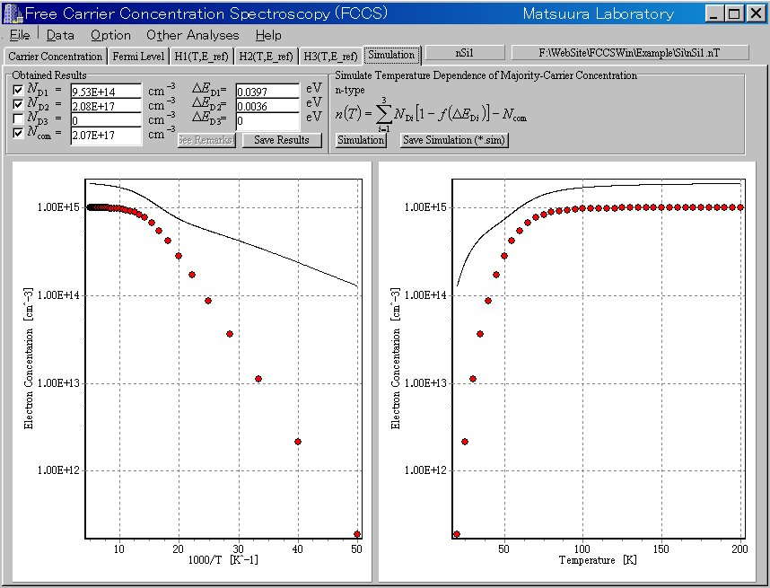
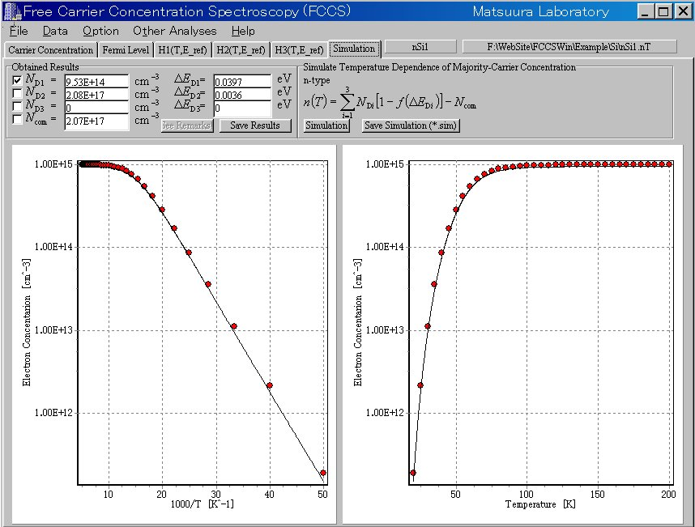

How to use the application
5. Simulation
When the simulated data is not in agreement with the experimental data, for example,

you should not use the second density and energy level and the compensating density.
